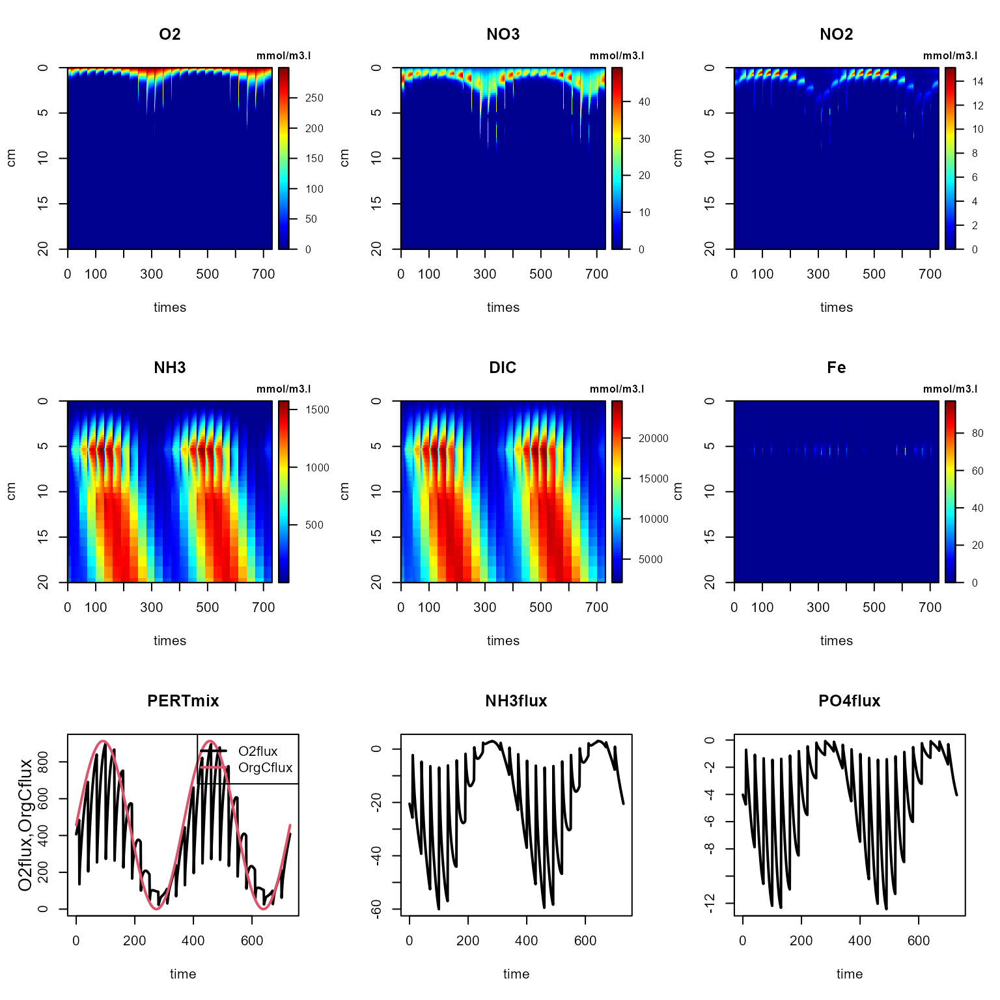
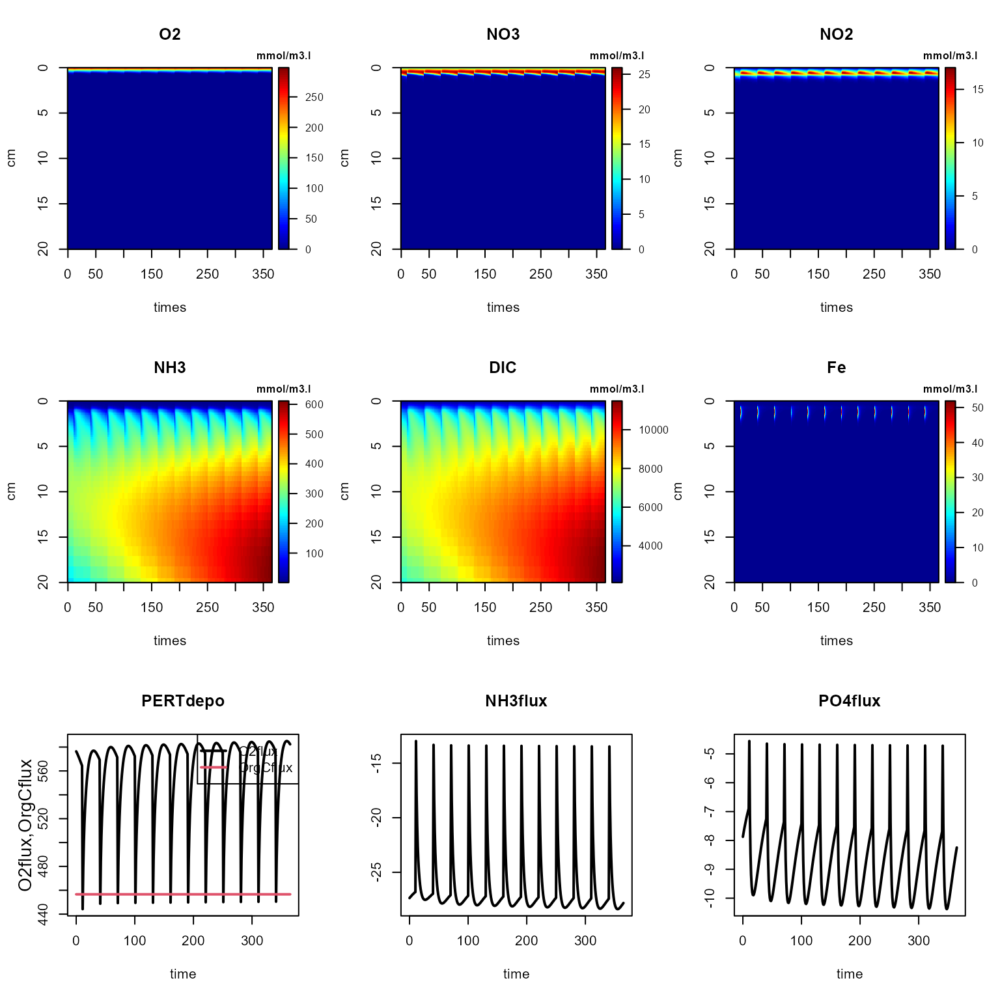
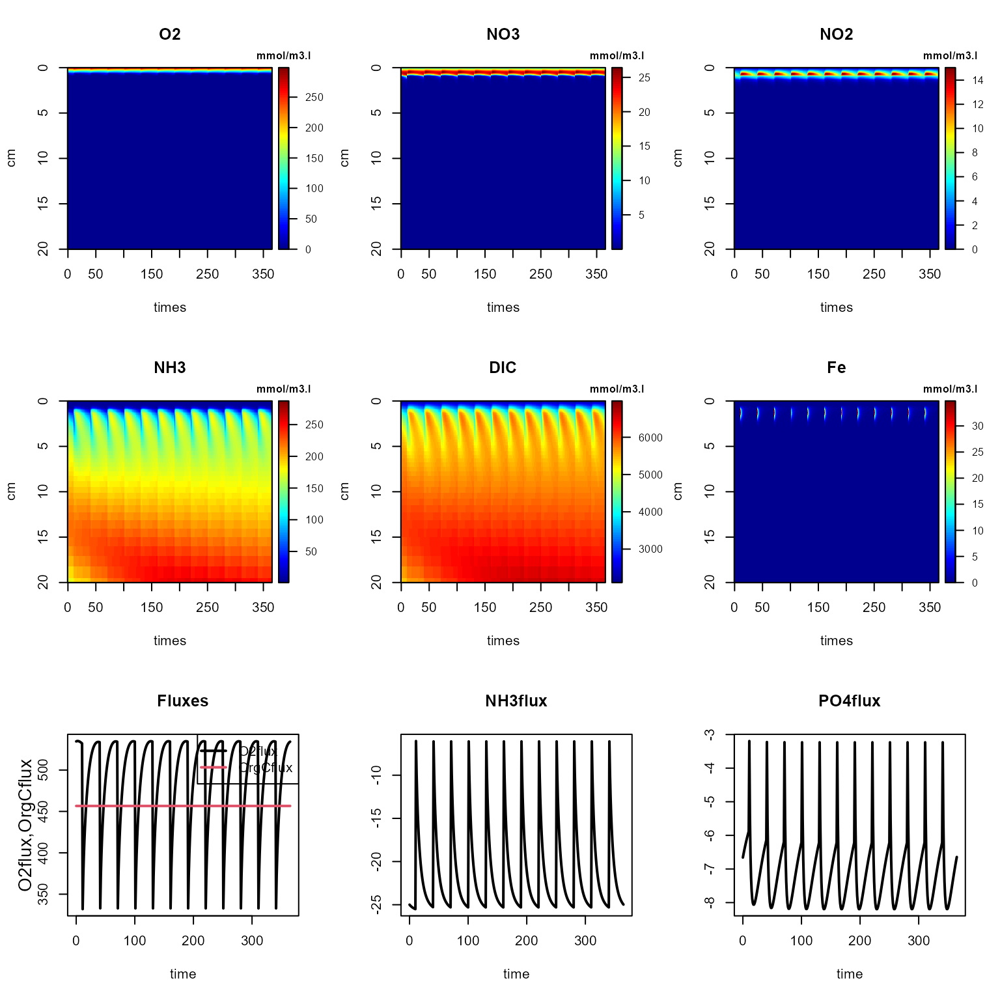
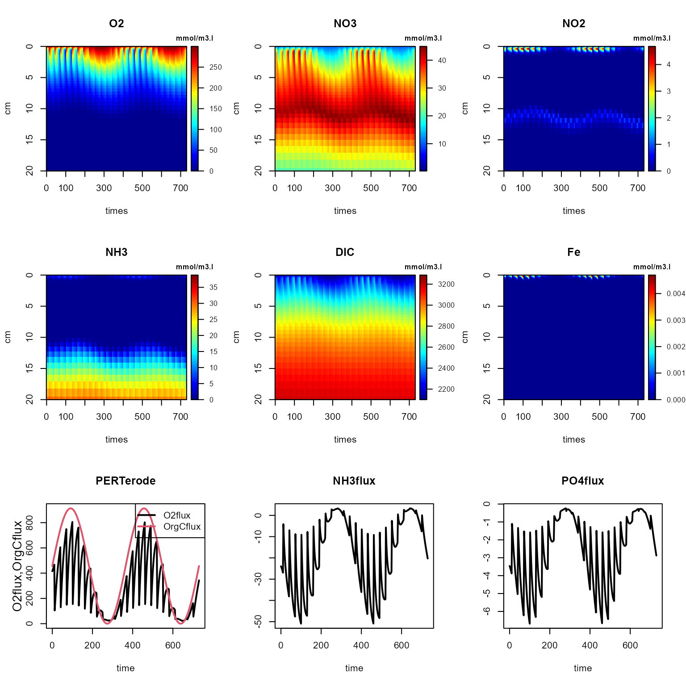
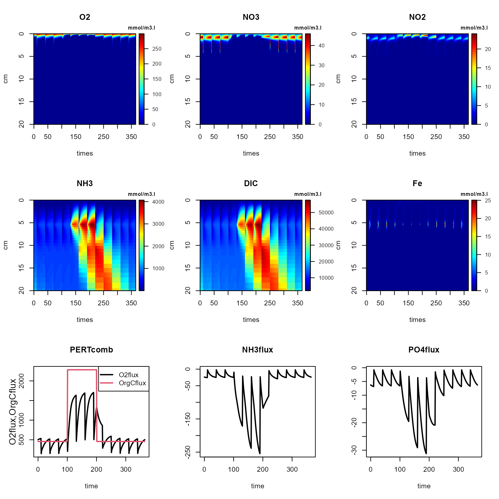
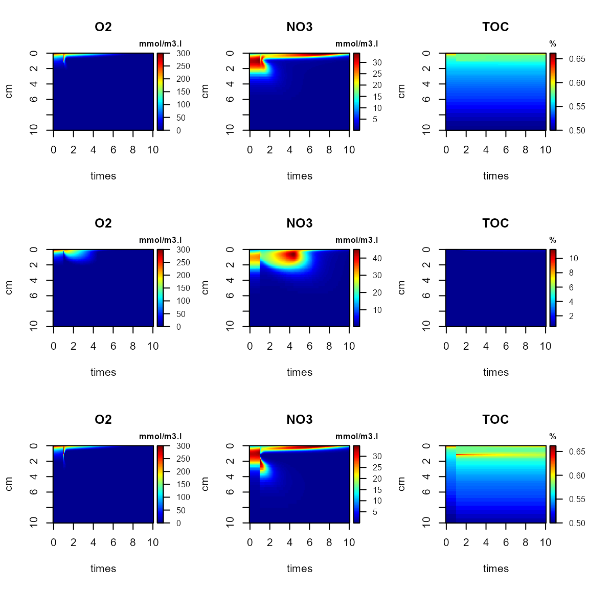
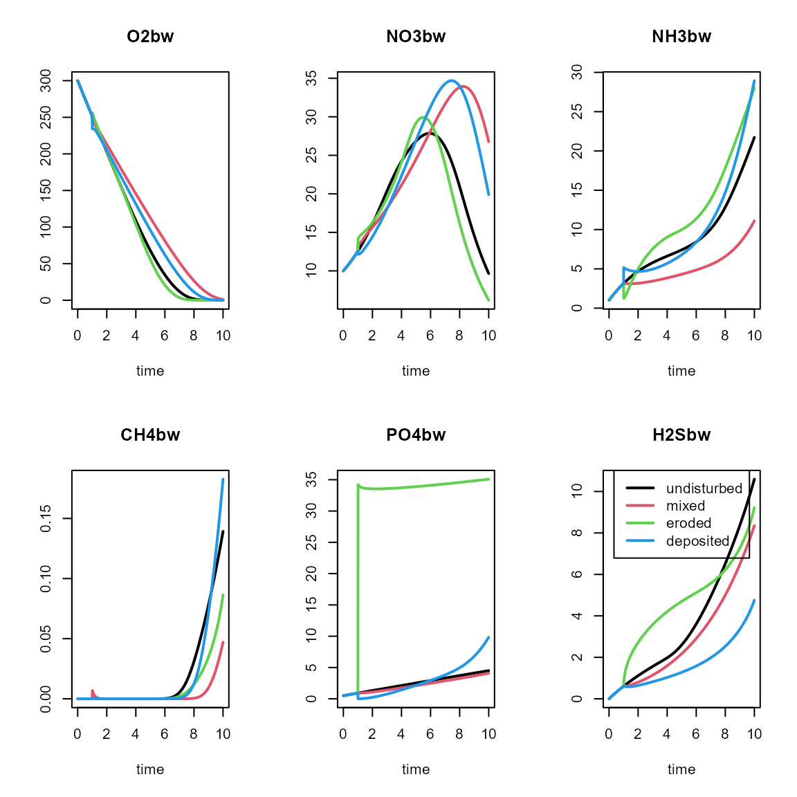
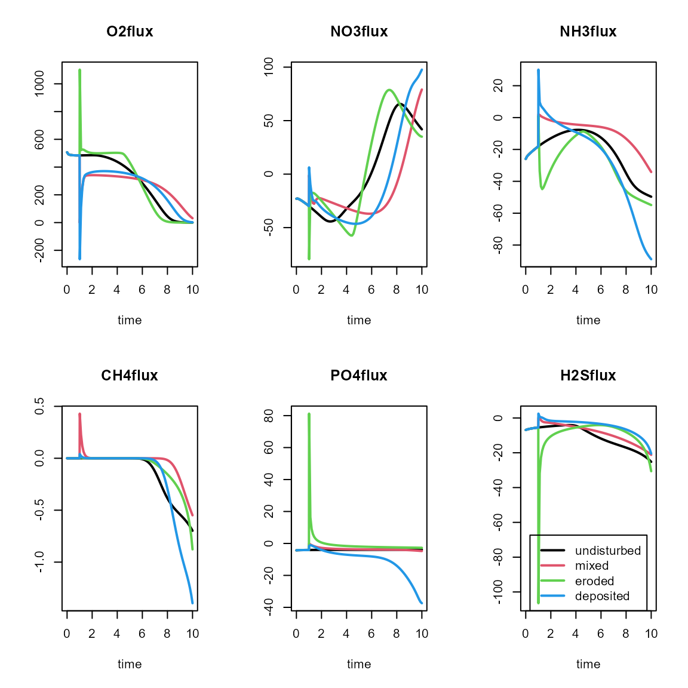
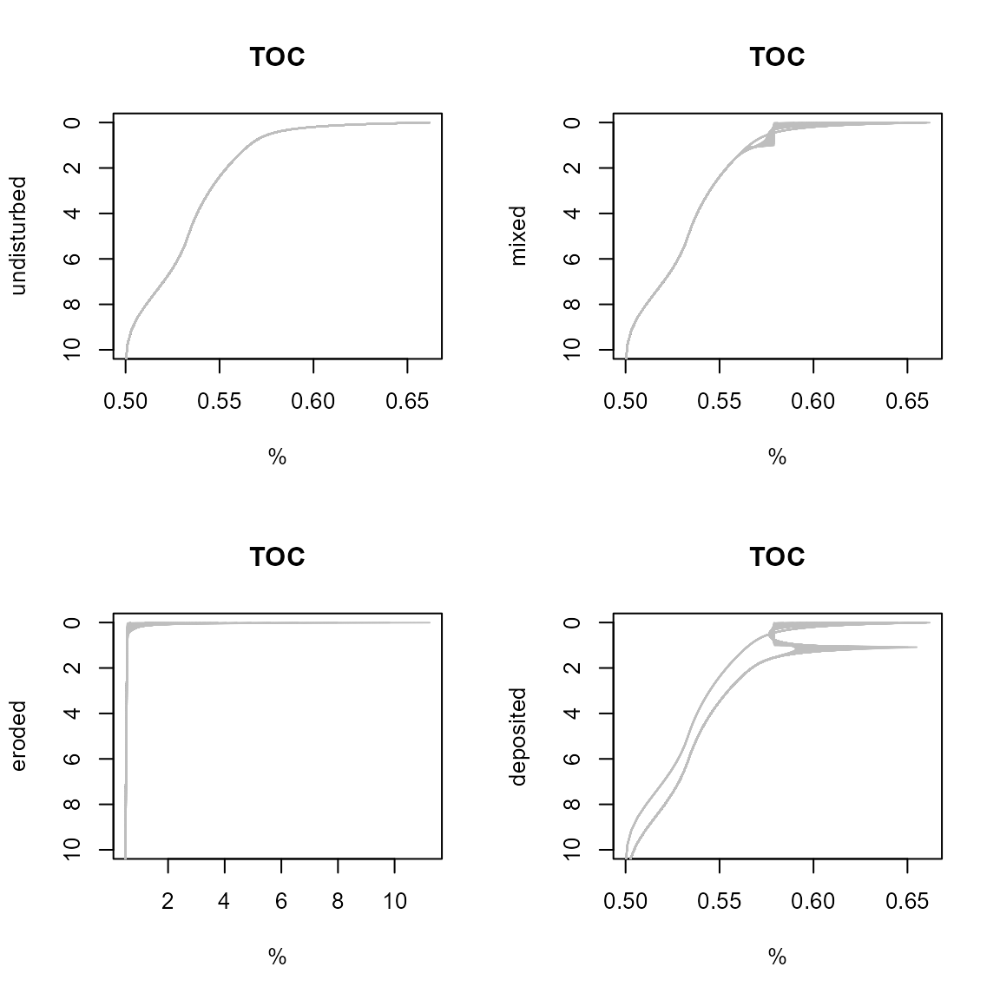

Delving deeper with event-driven early diagenesis with FESDIA
FESDIAperturb.RmdFESDIAperturb
require(FESDIA)Tne FESDIA package contains functions to generate diagenetic profiles, describing the cycles of C, N, O2, Fe, S and P. It is based on the OMEXDIA model (Soetaert et al., 1996a, b), extended with P, S, Fe dynamics.
The model describes seventeen state variables, in 100 layers:
- 2 fractions of organic carbon (FDET,SDET): fast and slow decaying, solid substance.
- Oxygen (O2), dissolved substance.
- Nitrate (NO3), dissolved substance.
- Nitrite (NO2), dissolved substance.
- Ammonia (NH3), dissolved substance.
- Dissolved inorganic carbon (DIC), dissolved substance
- Iron 2+ (Fe), dissolved substance
- Sulphide (H2S), dissolved substance
- Methane (CH4), dissolved substance
- Phosphate (PO4), dissolved substance
- Alkalinity (ALK), dissolved substance
- Iron hydroxides (FeOH3), solid substance
- Iron-bound P (FeP), P bound to iron oxides, solid substance
- Ca-bound P (CaP), apatite, solid substance
- Adsorbed P (Pads), solid substance
Time is expressed in days, and space is expressed in centimeters.
Concentrations of liquids and solids are expressed in [nmol/cm3 liquid] and [nmol/cm3 solid] respectively (Note: this is the same as [mmol/m3 liquid] and [mmol/m3 solid]).
Compared to the OMEXDIA model, FESDIA includes the following additions:
- simple phosphorus, iron and sulphur dynamics
- long-distance H2S and CH4 oxidation, e.g. by cable bacteria or worms associated with chemosynthetic bacteria
- allowing boundary conditions with water overlying sediment or exposure to the air.
- external conditions set either with time-variable forcings or as constant parameters
- bottom water conditions either imposed or dynamically modeled
- possibility to include sediment perturbation events
- vertical profiles of porosity, irrigation, bioturbation either set with parameters or inputted as data.
The model is implemented in fortran (for speed) and linked to R (for flexibility).
Main functions
The main functions allow to solve the model to steady state (FESDIAsolve), to run it dynamically (FESDIAdyna), or to add perturbations (FESDIAperturb) to dynamic simulations.
Steady-state solution, function FESDIAsolve
Function FESDIAsolve finds the steady-state solution of the FESDIA model. Its arguments are:
args(FESDIAsolve)
function (parms = list(), yini = NULL, gridtype = 1, Grid = NULL,
porosity = NULL, bioturbation = NULL, irrigation = NULL,
surface = NULL, diffusionfactor = NULL, dynamicbottomwater = FALSE,
ratefactor = NULL, calcpH = FALSE, verbose = FALSE, method = NULL,
times = c(0, 1e+06), ...)
NULLhere parms is a list with a subset of the FESDIA parameters (see main vignette for what they mean and their default values). If unspecified, then the default parameters are used.
Dynamic run, function FESDIAdyna
Function FESDIAdyna runs the model dynamically without perturbations. Its arguments are:
args(FESDIAdyna)
function (parms = list(), times = 0:365, spinup = NULL, yini = NULL,
gridtype = 1, Grid = NULL, porosity = NULL, bioturbation = NULL,
irrigation = NULL, surface = NULL, diffusionfactor = NULL,
dynamicbottomwater = FALSE, CfluxForc = NULL, FeOH3fluxForc = NULL,
CaPfluxForc = NULL, O2bwForc = NULL, NO3bwForc = NULL, NO2bwForc = NULL,
NH3bwForc = NULL, FebwForc = NULL, H2SbwForc = NULL, SO4bwForc = NULL,
CH4bwForc = NULL, PO4bwForc = NULL, DICbwForc = NULL, ALKbwForc = NULL,
wForc = NULL, biotForc = NULL, irrForc = NULL, rFastForc = NULL,
rSlowForc = NULL, pFastForc = NULL, MPBprodForc = NULL, gasfluxForc = NULL,
MnbwForc = NULL, MnO2fluxForc = NULL, HwaterForc = NULL,
ratefactor = NULL, calcpH = FALSE, verbose = FALSE, ...)
NULLPerturbation run, function FESDIAperturb
Function FESDIAperturb runs the FESDIA model for a specific time interval while adding perturbations at requested times.
Its arguments are:
args(FESDIAperturb)
function (parms = list(), times = 0:365, spinup = NULL, yini = NULL,
gridtype = 1, Grid = NULL, porosity = NULL, bioturbation = NULL,
irrigation = NULL, surface = NULL, diffusionfactor = NULL,
dynamicbottomwater = FALSE, perturbType = "deposit", perturbTimes = NULL,
perttype_mat = NULL, perturbDepth = 5, concfac = NULL, CfluxForc = NULL,
FeOH3fluxForc = NULL, CaPfluxForc = NULL, O2bwForc = NULL,
NO3bwForc = NULL, NO2bwForc = NULL, NH3bwForc = NULL, FebwForc = NULL,
H2SbwForc = NULL, SO4bwForc = NULL, CH4bwForc = NULL, PO4bwForc = NULL,
DICbwForc = NULL, ALKbwForc = NULL, wForc = NULL, biotForc = NULL,
irrForc = NULL, rFastForc = NULL, rSlowForc = NULL, pFastForc = NULL,
MPBprodForc = NULL, gasfluxForc = NULL, HwaterForc = NULL,
ratefactor = NULL, MnbwForc = NULL, MnO2fluxForc = NULL,
verbose = FALSE, extmix = FALSE, ...)
NULLThe functions to run the model dynamically also allow for several external conditions to be either constants or to vary in time. Thus, they can be set by a parameter or as a forcing function.
These conditions are:
- the flux of carbon, CaP and FeP (Cflux, CaPflux,
FeOH3flux), forcings CfluxForc, CaPfluxForc,
FeOH3fluxForc),
- the bottom water concentrations (O2bw, NO2bw, NO3bw, NH3bw, H2Sbw, PO4bw, DICbw, ALKbw), forcings O2bwForc, NO3bwForc, NO2bwForc, NH3bwForc, ODUbwForc, PO4bwForc, DICbwForc, ALKbwForc)
- the sedimentation, bioturbation and bio-irrigation rates (w, biot, irr), (wForc, biotForc, irrForc)
- the decay rates of organic matter (rFast, rSlow) and the fraction fast organic matter present in the flux (pFast), forcings (rFastForc, rSlowForc, pFastForc)
- the microphytobenthos production rate (MPBprod), (MPBprodForc)
- the air-sea exchange rate when exposed to the air (gasflux), (gasfluxForc)
- the height of the overlying water (Hwater), (HwaterForc), used only if dynamicbottomwater is TRUE.
- ratefac is a (time series or a constant) multiplication factor, that is multiplied with all biogeochemical rates. It can be used to impose temperature dependency.
These forcing functions are either prescribed as a list that either contains a data series (list (data = …)) or as a list that specifies a periodic signal, defined by the amplitude (amp), period, phase, a coefficient that defines the strength of the periodic signal (power) and the minimum value (min) : the default settings are: list(amp = 0, period = 365, phase = 0, pow = 1, min = 0). The mean value in the sine function is given by the corresponding parameter.
For instance, for the C flux, the seasonal signal would be defined as: .
Three types of perturbations are possible (argument perturbType):
- mixing straightens the profiles over a certain depth
- erosion removes part of the surficial sediment
- deposition adds sediment on top.
These perturbations are implemented as events, and need input of the perturbation times (perturbTimes), and the depth (perturbDepth). For deposition events, the factor of increase/decrease of the solid fraction concentration can also be inputted (concfac).
Accessory functions
The default values of the parameters, and their units can be interrogated:
P <- FESDIAparms()
head(P)
#> parms units description
#> Cflux 4.566210e+02 nmolC/cm2/d total organic C deposition
#> pFast 9.000000e-01 - part FDET in carbon flux
#> FeOH3flux 1.000000e+00 nmol/cm2/d deposition rate of FeOH3
#> CaPflux 0.000000e+00 nmol/cm2/d deposition rate of CaP
#> rFast 6.849315e-02 /d decay rate FDET
#> rSlow 1.369863e-04 /d decay rate SDETSee the appendix of the main vignette for a complete list of the parameters.
Note: some parameters only apply if the bottom water concentration is modeled dynamically; they comprise the dilution of the bottom water (nudging to bottom water concentration), the height of the bottom water (Hwater), and the sinking rate of the solid constituents (C, FeP, FeOH3) (parameters Cfall, FePfall and FeOH3fall).
Budgets
Once the model is solved, it is possible to calculate budgets of the C, N, P, S, Fe and O2 cycle (FESDIAbudgetC, FESDIAbudgetN, FESDIAbudgetP, FESDIAbudgetS, FESDIAbudgetFe, FESDIAbudgetO2).
std <- FESDIAsolve()
print(FESDIAbudgetC(std))
#> Warning in rbind(deparse.level, ...): number of columns of result, 7, is not a
#> multiple of vector length 4 of arg 2
#> $Fluxes
#> FDET SDET DIC CH4 CinCaP CaCO3
#> surface 4.109589e+02 4.566210e+01 -4.550175e+02 -4.391394e-08 0 0
#> bottom 1.001633e-191 1.168446e-71 4.502289e-03 1.702274e-44 0 0
#> perturb 0.000000e+00 0.000000e+00 0.000000e+00 0.000000e+00 0 0
#> netin 4.109589e+02 4.566210e+01 -4.550220e+02 -4.391394e-08 0 0
#> ARAG Total
#> surface 0 1.603499474
#> bottom 0 0.004502289
#> perturb 0 0.000000000
#> netin 0 1.598997186
#>
#> $Rates
#> OxicMineralisation Denitrification ManganeseReduction IronReduction
#> nmolC/cm2/d 427.0496 9.43749 0.09673114 0.1253984
#> SulphateReduction Methanogenesis TotalMineralisation CH4oxidation
#> nmolC/cm2/d 19.27247 0.6393563 456.621 0.01795032
#> MnCO3precitation CH4oxid.dist CH4oxidAOM MPBDICuptake
#> nmolC/cm2/d 0.7167273 0 0.3017278 0
#> MPBFDETproduction MPBResp CaPprecipitation CaPdissolution
#> nmolC/cm2/d 0 0 0 0
#> CaCO3dissolution ARAGdissolution CaCO3production
#> nmolC/cm2/d 0 0 0
#>
#> $Losses
#> [1] 0.004502289
#>
#> $dC
#> Ext DET DIC CaP CH4
#> 1.603500e+00 -1.136868e-13 -8.822699e-01 0.000000e+00 -4.392105e-08
#> MPB MnCO3 CaCO3 ARAG Burial
#> 0.000000e+00 -7.167273e-01 0.000000e+00 0.000000e+00 -4.502289e-03
#> sum
#> -3.814397e-14
#>
#> $Delta
#> [1] 1.598997
#>
#> $Fluxmat
#> Ext DET DIC CaP CH4 MPB MnCO3 CaCO3 ARAG
#> Ext 0.0000 456.621 0.0000000 0 0.0000000 0 0.0000000 0 0
#> DET 0.0000 0.000 456.3013264 0 0.3196781 0 0.0000000 0 0
#> DIC 455.0175 0.000 0.0000000 0 0.0000000 0 0.7167273 0 0
#> CaP 0.0000 0.000 0.0000000 0 0.0000000 0 0.0000000 0 0
#> CH4 0.0000 0.000 0.3196781 0 0.0000000 0 0.0000000 0 0
#> MPB 0.0000 0.000 0.0000000 0 0.0000000 0 0.0000000 0 0
#> MnCO3 0.0000 0.000 0.0000000 0 0.0000000 0 0.0000000 0 0
#> CaCO3 0.0000 0.000 0.0000000 0 0.0000000 0 0.0000000 0 0
#> ARAG 0.0000 0.000 0.0000000 0 0.0000000 0 0.0000000 0 0
#> Burial 0.0000 0.000 0.0000000 0 0.0000000 0 0.0000000 0 0
#> Burial
#> Ext 0.000000e+00
#> DET 1.168446e-71
#> DIC 4.502289e-03
#> CaP 0.000000e+00
#> CH4 0.000000e+00
#> MPB 0.000000e+00
#> MnCO3 0.000000e+00
#> CaCO3 0.000000e+00
#> ARAG 0.000000e+00
#> Burial 0.000000e+00Perturbation runs
First the default run:
times <- 0:730
DIA <- FESDIAdyna(Cflux = list(amp = 1), spinup = 0:730,
times = times, verbose = FALSE)Mixing events
We add a mixing event every 30 days, and run this for 2 years, with two years spinup (spinup not shown).
times <- 0:730
PERTmix <- FESDIAperturb(Cflux = list(amp = 1), spinup = 0:730,
perturbTimes = seq(from = 10, to = 730, by = 30),
times = times, verbose = FALSE)
#>
#> Finish spinup!
#>
#> tindex after spinup: 0
image2D(PERTmix, ylim = c(20, 0), which = 3:8, mfrow = c(3,3))
matplot.0D(PERTmix, which = c("OrgCflux", "O2flux"), mfrow = NULL, lty = 1, lwd = 2)
plot(PERTmix, which = c("NH3flux", "PO4flux"), mfrow = NULL, lwd = 2)
The instantaneous fluxes
PertFlux <- attributes(PERTmix)$perturbFlux
knitr:::kable(rbind(PertFlux))| time | FDET | SDET | O2 | NO3 | NO2 | NH3 | DIC | Fe | FeOH3 | H2S | SO4 | CH4 | PO4 | FeP | CaP | Pads | ALK | FeOH3B | Mn | MnO2 | MnO2B | |
|---|---|---|---|---|---|---|---|---|---|---|---|---|---|---|---|---|---|---|---|---|---|---|
| Fluxes | 10 | 32909.8722 | 42102.67 | 819.1553 | 25.51262 | -0.2163109 | -3156.189 | -475.6374 | 0.0169538 | 0 | 0 | -47620.94 | -0.0030312 | 87.90857 | -20199.69 | 23801.53 | -1.290892 | -53041.14 | 69.34965 | -0.0258021 | 60.29834 | 74.72922 |
| Fluxes.1 | 40 | 47808.7381 | 45795.66 | 824.2983 | 25.27546 | -0.4875750 | -2908.309 | -442.5082 | 0.0124929 | 0 | 0 | -45374.47 | -0.0097421 | 72.88549 | -20214.70 | 22458.33 | -1.259895 | -50478.52 | 56.09171 | -0.0331619 | 48.95367 | 59.63648 |
| Fluxes.2 | 70 | 58513.4993 | 51309.83 | 827.8152 | 25.53729 | -0.8659699 | -2740.069 | -420.3917 | 0.0063111 | 0 | 0 | -44135.38 | -0.0167726 | 69.64657 | -20527.63 | 21646.82 | -1.229139 | -49065.61 | 52.11650 | -0.0384314 | 44.58370 | 55.42643 |
| Fluxes.3 | 100 | 62081.9928 | 56369.53 | 828.8831 | 25.94542 | -1.0584520 | -2709.924 | -417.2167 | 0.0026920 | 0 | 0 | -44458.09 | -0.0230779 | 69.13302 | -21168.44 | 21694.85 | -1.234313 | -49434.30 | 49.97645 | -0.0428124 | 42.42204 | 53.31015 |
| Fluxes.4 | 130 | 57629.7273 | 60220.64 | 828.5452 | 25.86548 | -1.0923882 | -2831.722 | -434.7587 | 0.0005037 | 0 | 0 | -46377.04 | -0.0223380 | 69.19285 | -22042.82 | 22645.98 | -1.266212 | -51621.09 | 49.08066 | -0.0425162 | 42.23908 | 52.44412 |
| Fluxes.5 | 160 | 46317.8201 | 61705.52 | 826.8641 | 25.36190 | -0.9649916 | -3078.804 | -469.0952 | 0.0004649 | 0 | 0 | -49466.76 | -0.0169669 | 69.60788 | -22973.59 | 24288.73 | -1.328565 | -55141.73 | 49.34276 | -0.0397695 | 43.77097 | 52.72443 |
| Fluxes.6 | 190 | 31097.1369 | 60328.84 | 822.8024 | 25.15412 | -0.4124412 | -3389.483 | -511.5571 | 0.0018033 | 0 | 0 | -52966.66 | -0.0099293 | 70.08067 | -23759.53 | 26214.94 | -1.422400 | -59132.56 | 50.72341 | -0.0370401 | 46.58277 | 54.09338 |
| Fluxes.7 | 220 | 15937.6473 | 56605.08 | 818.7386 | 25.01880 | -0.4005919 | -3683.910 | -551.4327 | 0.0037172 | 0 | 0 | -56012.17 | -0.0061305 | 70.56765 | -24230.98 | 27944.76 | -1.519136 | -62603.46 | 53.19844 | -0.0328885 | 50.21973 | 56.49989 |
| Fluxes.8 | 250 | 4793.1129 | 51346.03 | 813.8380 | 25.64993 | -0.1877964 | -3889.370 | -578.7826 | 0.0052031 | 0 | 0 | -57858.06 | -0.0029995 | 70.97572 | -24293.80 | 29051.32 | -1.598400 | -64708.98 | 56.68265 | -0.0261300 | 54.31662 | 59.89415 |
| Fluxes.9 | 280 | 570.4670 | 46017.15 | 810.2024 | 26.39845 | 0.0000981 | -3954.174 | -586.8582 | 0.0074639 | 0 | 0 | -58062.73 | -0.0009463 | 73.19589 | -23955.30 | 29266.07 | -1.628845 | -64943.45 | 61.19788 | -0.0176733 | 58.51441 | 64.68283 |
| Fluxes.10 | 310 | 4370.9549 | 41979.50 | 809.8538 | 26.49585 | -0.0379847 | -3862.948 | -573.8367 | 0.0109328 | 0 | 0 | -56604.10 | -0.0068015 | 80.50772 | -23326.35 | 28548.24 | -1.600116 | -63279.46 | 67.93578 | -0.0202477 | 63.33095 | 73.38266 |
| Fluxes.11 | 340 | 15203.3253 | 40288.00 | 812.8802 | 26.21065 | -0.1005568 | -3641.826 | -543.3602 | 0.0149569 | 0 | 0 | -53894.36 | -0.0020873 | 82.76982 | -22595.73 | 27098.81 | -1.532231 | -60187.15 | 68.45566 | -0.0176622 | 62.11427 | 74.97031 |
| Fluxes.12 | 370 | 30242.2954 | 41382.19 | 818.4198 | 25.51409 | -0.2446085 | -3350.933 | -503.7339 | 0.0143864 | 0 | 0 | -50686.63 | -0.0032640 | 76.15402 | -21981.17 | 25317.78 | -1.453078 | -56525.84 | 61.45083 | -0.0246953 | 55.13796 | 65.90766 |
| Fluxes.13 | 400 | 45565.3641 | 44979.97 | 823.7770 | 25.22285 | -0.5089665 | -3070.489 | -465.9074 | 0.0110399 | 0 | 0 | -47883.62 | -0.0084354 | 71.05323 | -21668.34 | 23703.17 | -1.388567 | -53327.52 | 56.02210 | -0.0314609 | 49.23492 | 59.43800 |
| Fluxes.14 | 430 | 57175.9912 | 50165.04 | 827.4246 | 25.46488 | -0.7964446 | -2879.188 | -440.5761 | 0.0067008 | 0 | 0 | -46288.99 | -0.0152161 | 69.39440 | -21758.05 | 22715.26 | -1.352056 | -51508.67 | 52.46274 | -0.0374729 | 45.05302 | 55.76108 |
| Fluxes.15 | 460 | 62045.7942 | 55583.17 | 828.8312 | 25.91131 | -1.0464012 | -2832.076 | -435.1091 | 0.0030733 | 0 | 0 | -46374.67 | -0.0225713 | 69.11633 | -22238.60 | 22643.70 | -1.349733 | -51606.37 | 50.19732 | -0.0425384 | 42.61186 | 53.52682 |
| Fluxes.16 | 490 | 58904.6797 | 59737.69 | 828.6855 | 25.92068 | -1.0929573 | -2944.378 | -451.3203 | 0.0011212 | 0 | 0 | -48141.92 | -0.0229429 | 69.15298 | -22989.94 | 23521.12 | -1.382941 | -53620.48 | 49.12156 | -0.0428592 | 42.12169 | 52.48173 |
| Fluxes.17 | 520 | 48571.9636 | 61282.39 | 827.2863 | 25.46113 | -1.0160034 | -3186.628 | -484.9042 | 0.0006695 | 0 | 0 | -51122.26 | -0.0181185 | 69.52926 | -23818.14 | 25114.50 | -1.451982 | -57017.00 | 49.19932 | -0.0403322 | 43.39750 | 52.58022 |
| Fluxes.18 | 550 | 33742.5579 | 59774.33 | 823.6063 | 25.14604 | -0.4853243 | -3493.325 | -526.6839 | 0.0016723 | 0 | 0 | -54510.63 | -0.0110256 | 70.00316 | -24507.43 | 26991.96 | -1.554976 | -60881.59 | 50.39544 | -0.0375596 | 46.03007 | 53.77172 |
| Fluxes.19 | 580 | 18284.3286 | 55935.80 | 819.5870 | 25.01198 | -0.4913223 | -3779.549 | -565.2694 | 0.0035340 | 0 | 0 | -57392.76 | -0.0068363 | 70.52021 | -24878.44 | 28645.13 | -1.658734 | -64168.07 | 52.68888 | -0.0338107 | 49.55163 | 56.00727 |
| Fluxes.20 | 610 | 6229.0655 | 50674.43 | 814.4896 | 25.61954 | -0.2151620 | -3969.090 | -590.2901 | 0.0051125 | 0 | 0 | -59000.78 | -0.0032360 | 70.83567 | -24838.04 | 29631.93 | -1.737496 | -66004.88 | 56.00776 | -0.0275197 | 53.59966 | 59.22905 |
| Fluxes.21 | 640 | 721.0921 | 45288.98 | 810.7871 | 26.22757 | -0.0278121 | -4010.943 | -595.1407 | 0.0070970 | 0 | 0 | -58914.73 | -0.0014095 | 72.51388 | -24403.32 | 29693.45 | -1.757517 | -65910.04 | 60.29489 | -0.0191283 | 57.75700 | 63.66006 |
| Fluxes.22 | 670 | 3197.0104 | 41194.61 | 809.7698 | 26.51872 | -0.0695102 | -3895.093 | -578.6694 | 0.0102904 | 0 | 0 | -57169.61 | -0.0046848 | 78.67259 | -23696.52 | 28819.90 | -1.714318 | -63922.92 | 66.55280 | -0.0186846 | 62.41212 | 71.52664 |
| Fluxes.23 | 700 | 13010.9622 | 39461.32 | 812.1611 | 26.31844 | -0.0897559 | -3654.181 | -545.4181 | 0.0143345 | 0 | 0 | -54243.03 | -0.0021503 | 82.67603 | -22912.59 | 27250.25 | -1.631391 | -60587.21 | 69.04064 | -0.0175033 | 62.71145 | 75.56172 |
… compared to mean fluxes
rbind(perturbflux = (colSums(PertFlux)/730)[2:7],
ordinary = summary(PERTmix)[4,c("O2flux","NO3flux", "NH3flux", "H2Sflux", "DICflux", "PO4flux")])
#> O2flux NO3flux NH3flux H2Sflux DICflux
#> perturbflux 1034.144 1670.58681 26.97082 0.8448811 -0.01631401
#> ordinary 394.474 -19.66699 -19.04449 -186.0488911 -525.57290414
#> PO4flux
#> perturbflux -110.839179
#> ordinary -4.418762deposition events - no loss in organics
We add a deposition event every month, and run this for 1 year, with one year spinup (spinup not shown). Here we keep the deposition flux constant.
In the first run, the deposited sediment has the same concentration of solids as that which is present (concfac = 1).
times <- 0:365
PERTdepo <- FESDIAperturb(spinup = 0:365, times = times,
perturbType = "deposit", perturbDepth = 1,
perturbTimes = seq(from = 10, to = max(times), by = 30), verbose = FALSE)
#>
#> Finish spinup!
#>
#> tindex after spinup: 0
image2D(PERTdepo, ylim = c(20, 0), which = 3:8, mfrow = c(3,3))
matplot.0D(PERTdepo, which = c("OrgCflux", "O2flux"), mfrow = NULL, lty = 1, lwd = 2)
plot(PERTdepo, which = c("NH3flux", "PO4flux"), mfrow = NULL, lwd = 2)
The instantaneous fluxes, compared to the other fluxes
PertFlux <- attributes(PERTdepo)$perturbFlux
rbind(perturbflux = (colSums(PertFlux)/365)[2:7],
ordinary = summary(PERTdepo)[4,c("O2flux","NO3flux", "NH3flux", "H2Sflux", "DICflux", "PO4flux")])
#> O2flux NO3flux NH3flux H2Sflux DICflux
#> perturbflux 510.4940 4105.94856 5.849741 0.1506222 -0.01409656
#> ordinary 561.9297 -27.35957 -26.363849 -283.1181742 -951.37591009
#> PO4flux
#> perturbflux -0.4948736
#> ordinary -8.8013914Deposition - loss in organics
The second run has half the concentration of solids as originally present (concfac = 0.5).
times <- 0:365
PERTdepo2 <- FESDIAperturb(spinup = 0:365, times = times,
perturbType = "deposit", perturbDepth = 1, concfac = 0.5,
perturbTimes = seq(from = 10, to = max(times), by = 30), verbose = FALSE)
#>
#> Finish spinup!
#>
#> tindex after spinup: 0
image2D(PERTdepo2, ylim = c(20, 0), which = 3:8, mfrow = c(3,3))
matplot.0D(PERTdepo2, which = c("OrgCflux", "O2flux"), mfrow = NULL, lty = 1, lwd = 2, main = "Fluxes")
plot(PERTdepo2, which = c("NH3flux", "PO4flux"), mfrow = NULL, lwd = 2)
The instantaneous fluxes, compared to the other fluxes
PertFlux <- attributes(PERTdepo2)$perturbFlux
rbind(perturbflux = (colSums(PertFlux)/365)[2:7],
ordinary = summary(PERTdepo2)[4,c("O2flux","NO3flux", "NH3flux", "H2Sflux", "DICflux", "PO4flux")])
#> O2flux NO3flux NH3flux H2Sflux DICflux PO4flux
#> perturbflux 392.0513 202.45342 5.814262 0.1513268 -0.01025095 -0.5828644
#> ordinary 493.6299 -23.90446 -21.365417 -200.0269817 -762.18983402 -7.1001413erosion
An erosion event every month removes a fraction of the sediment
times <- 0:365*2
PERTerode <- FESDIAperturb(Cflux = list(amp = 1), spinup = 0:365, times = times,
perturbType = "erode", perturbDepth = 1,
perturbTimes = seq(from = 10, to = max(times), by = 30), verbose = FALSE)
#>
#> Finish spinup!
#>
#> tindex after spinup: 0
image2D(PERTerode, ylim = c(20, 0), which = 3:8, mfrow = c(3,3))
matplot.0D(PERTerode, which = c("OrgCflux", "O2flux"), mfrow = NULL, lty = 1, lwd = 2)
plot(PERTerode, which = c("NH3flux", "PO4flux"), mfrow = NULL, lwd = 2)
The instantaneous fluxes, compared to the other fluxes
PertFlux <- attributes(PERTerode)$perturbFlux
rbind(perturbflux = (colSums(PertFlux)/365)[2:7],
ordinary = summary(PERTerode)[4,c("O2flux","NO3flux", "NH3flux", "H2Sflux", "DICflux", "PO4flux")])
#> O2flux NO3flux NH3flux H2Sflux DICflux PO4flux
#> perturbflux -347.3249 -92.08122 -7.239739 -0.6726225 -0.06298927 1.271287
#> ordinary 294.6011 -12.61240 -17.708113 -0.6918101 -264.49394416 -2.531528
cbind(FESDIAbudgetO2(DIA)$Fluxes, FESDIAbudgetO2(PERTerode)$Fluxes)
#> Warning in rbind(deparse.level, ...): number of columns of result, 1, is not a
#> multiple of vector length 2 of arg 2
#> O2 O2
#> surface 4.952841e+02 2.943689e+02
#> bottom 8.826657e-172 1.689971e-129
#> perturb 0.000000e+00 -3.619870e+00
#> netin 4.952841e+02 2.907491e+02Mixing with variable forcings
We now combine a mixing event with a variable carbon deposition, imposed as a data series.
times <- 0:365
fluxforcdat <- data.frame(time = c(0, 100, 101, 200, 201, 365),
flux = c(20, 20, 100, 100, 20, 20)*1e5/12/365)
BASE <- FESDIAdyna(spinup = 0:365, times = times,
Cflux = list(data = fluxforcdat))
PERTcomb <- FESDIAperturb(spinup = 0:365, times = times,
Cflux = list(data = fluxforcdat),
perturbTimes = seq(from = 10, to = max(times), by = 30))
#>
#> Finish spinup!
#>
#> tindex after spinup: 0
image2D(PERTcomb, ylim = c(20, 0), which = 3:8, mfrow = c(3,3))
matplot.0D(PERTcomb, which = c("OrgCflux", "O2flux"), mfrow = NULL, lty = 1, lwd = 2)
plot(PERTcomb, which = c("NH3flux", "PO4flux"), mfrow = NULL, lwd = 2)
Mixing with explicitly modeled bottom water conditions
The simulation where bottomwater concentrations are also modeled is initiated with the steady-state conditions, while keeping the bottom water conditions constant.
std <- FESDIAsolve(dynamicbottomwater = FALSE, parms = list(Cflux = 20*1e5/12/365))
FESDIAbudgetO2(std, which = "Fluxes")
#> Warning in rbind(deparse.level, ...): number of columns of result, 1, is not a
#> multiple of vector length 2 of arg 2
#> O2
#> surface 506.9599
#> bottom 0.0000
#> perturb 0.0000
#> netin 506.9599The initial conditions for the dynamic bottom water concentration run needs to have the bottom water concentrations in the first row.
The model is run for a couple of days, for mixing, erosion and deposition events.
P <- FESDIAparms(std, as.vector = TRUE)[c("O2bw", "NO3bw", "NO2bw", "NH3bw", "DICbw", "Febw", "H2Sbw", "SO4bw", "CH4bw", "PO4bw", "ALKbw")]
# order of state variables, FDET,SDET,O2,NO3,NO2,NH3,DIC,Fe,FeOH3,H2S,SO4,CH4,PO4,FeP,CaP,Pads,ALK
BW <- c(0, 0, P[c("O2bw","NO3bw","NO2bw","NH3bw","DICbw","Febw")], 0, P[c("H2Sbw","SO4bw","CH4bw","PO4bw")], 0, 0, 0,P["ALKbw"])
times = seq(0, 10, length.out = 100)
dyn <- FESDIAdyna (dynamicbottomwater = TRUE, yini = rbind(BW, std$y),
parms = list(Cflux = 20*1e5/12/365), times = times)
#> Warning in rbind(BW, std$y): number of columns of result is not a multiple of
#> vector length (arg 1)
dyn1 <- FESDIAperturb(dynamicbottomwater = TRUE, yini = rbind(BW, std$y),
perturbType = "mix", perturbTimes = 1, perturbDepth = 1,
parms = list(Cflux = 20*1e5/12/365), times = times)
#> Warning in rbind(BW, std$y): number of columns of result is not a multiple of
#> vector length (arg 1)
#>
#> Finish spinup!
#>
#> tindex after spinup: 0
dyn2 <- FESDIAperturb(dynamicbottomwater = TRUE, yini = rbind(BW, std$y),
perturbType = "erode", perturbTimes = 1, perturbDepth = 1,
parms = list(Cflux = 20*1e5/12/365), times = times)
#> Warning in rbind(BW, std$y): number of columns of result is not a multiple of
#> vector length (arg 1)
#>
#> Finish spinup!
#>
#> tindex after spinup: 0
dyn3 <- FESDIAperturb(dynamicbottomwater = TRUE, yini = rbind(BW, std$y),
perturbType = "deposit", perturbTimes = 1, perturbDepth = 1,
parms = list(Cflux = 20*1e5/12/365), times = times)
#> Warning in rbind(BW, std$y): number of columns of result is not a multiple of
#> vector length (arg 1)
#>
#> Finish spinup!
#>
#> tindex after spinup: 0
image2D(dyn1, which = c("O2", "NO3", "TOC"), ylim = c(10,0), mfrow = c(3,3))
image2D(dyn2, which = c("O2", "NO3", "TOC"), ylim = c(10,0), mfrow = NULL)
#> Warning in rep(dots, length.out = n): 'x' is NULL so the result will be NULL
image2D(dyn3, which = c("O2", "NO3", "TOC"), ylim = c(10,0), mfrow = NULL)
#> Warning in rep(dots, length.out = n): 'x' is NULL so the result will be NULL
plot(dyn, dyn1, dyn2, dyn3, which = c("O2bw","NO3bw","NH3bw","CH4bw","PO4bw","H2Sbw"),
type = "l", lwd = 2, lty = 1)
legend("top", col =1:4, lty = 1, lwd = 2, legend = c("undisturbed", "mixed", "eroded", "deposited"))
plot(dyn, dyn1, dyn2, dyn3, which = c("O2flux","NO3flux","NH3flux","CH4flux","PO4flux","H2Sflux"),
type = "l", lwd = 2, lty = 1)
legend("bottom", col =1:4, lty = 1, lwd = 2, legend = c("undisturbed", "mixed", "eroded", "deposited"))
par(mfrow = c(2,2))
matplot1D(dyn, which = "TOC", type = "l",
col = "grey", ylim = c(10,0), mfrow = NULL, ylab = "undisturbed")
matplot1D(dyn1, which = "TOC", type = "l",
col = "grey", ylim = c(10,0), mfrow = NULL, ylab = "mixed")
matplot1D(dyn2, which = "TOC", type = "l",
col = "grey", ylim = c(10,0), mfrow = NULL, ylab = "eroded")
matplot1D(dyn3, which = "TOC", type = "l",
col = "grey", ylim = c(10,0), mfrow = NULL, ylab = "deposited")
References
Soetaert K, PMJ Herman and JJ Middelburg, 1996a. A model of early diagenetic processes from the shelf to abyssal depths. Geochimica Cosmochimica Acta, 60(6):1019-1040.
Soetaert K, PMJ Herman and JJ Middelburg, 1996b. Dynamic response of deep-sea sediments to seasonal variation: a model. Limnol. Oceanogr. 41(8): 1651-1668.